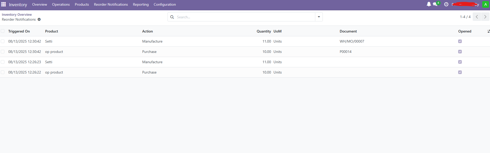

Reorder Notifications
Stay on top of low-stock events triggered by Odoo’s reordering rules. A bell in the top bar shows
unread notifications; click to open an inbox with details and a direct link to the RFQ/PO or MO.
Opening a notification marks it as Opened automatically, so the counter stays accurate.
Odoo 18
Inventory
Procurement / Reordering Rules
LGPL-3
Why this module?
Stockouts and manual checking waste time. This module turns reorder triggers into actionable alerts,
so buyers and planners can jump straight to the relevant document—no digging in menus or running reports.
Key features
- Systray bell with counter: see the number of unread reorder notifications at a glance.
- Inbox view: list of reorder events with product, orderpoint, action, quantity and UoM.
- Clickable document: open the related RFQ/PO or Manufacturing Order directly from the list or form.
- Auto “Opened” tracking: opening the notification form marks it as read; users can’t tick it manually from the list.
- Scheduler integration: notifications are created when the procurement scheduler generates RFQs/POs or MOs from orderpoints.
- Multi-company aware: counters and records respect the current company.
- Lightweight & native: implemented with OWL systray component and standard views—no wizards.

Supported flows
Purchase
RFQs / Purchase Orders from Buy route
Manufacturing
Manufacturing Orders from Manufacture route
How it works
- Define reordering rules (orderpoints) for products.
- Run the Procurement Scheduler (manually or via cron).
- When an RFQ/PO or MO is created from those rules, a notification is logged.
- Click the bell → open the inbox → click the Document link to jump to the RFQ/PO or MO.
- Opening the notification form auto-marks it as Opened, reducing the bell counter.
Permissions & compatibility
- Respects standard access rights (Users, Stock Users, Administrators).
- Works with core apps:
stock, purchase, mrp, web.
- No configuration required. Install and go.
Notes & limitations
- Notifications are created only when documents are generated by reordering rules (scheduler or equivalent flow).
- The “Opened” state is set automatically on form open to avoid accidental clearing from list views.
- The document column uses a
reference field for a native, clickable link.
Technical overview
- Model:
op.reorder.trigger.log (product, orderpoint, action, qty, UoM, reference to target document, opened flag).
- Hooks:
purchase.order.line.create() → logs Purchase notifications.mrp.production.create() → logs Manufacturing notifications.
- Systray: OWL component polling
op_unread_count() and opening an action to the inbox.
- UX:
- List view with columns + clickable Document reference.
- Form view without manual “Opened” editing; auto-mark on single-record read.
- Multi-company domain applied to unread counter.
Changelog
- 18.0.1.0.0 – Initial release: systray bell, inbox, clickable documents, auto-opened, scheduler hooks.